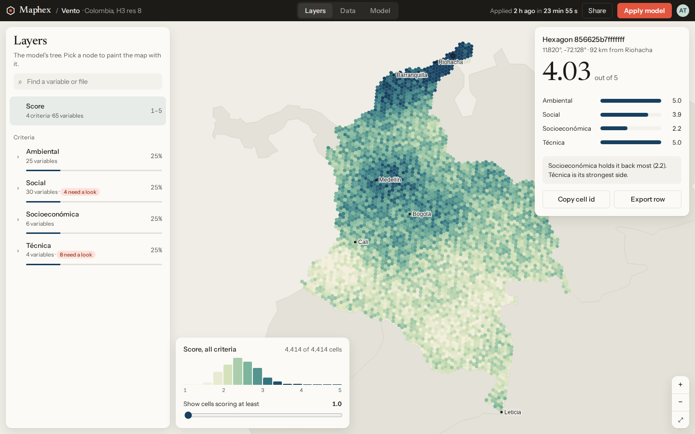

A · Lienzo
El mapa es la app. Basado en Felt.
- El mapa nunca se va. Data, Layers y Model son modos de un panel que flota encima.
- El árbol de capas es el árbol del modelo: criterio → variables, cada uno con su peso.
- Al hacer clic en un hexágono ves por qué tiene ese score: cuánto aporta cada criterio y cuál lo frena.
- Un filtro en vivo («celdas con score ≥ 3.5») con su histograma. Los pesos de los criterios repintan el mapa mientras arrastras.
Costo: el más grande. Obliga a pintar el mapa nosotros (deck.gl + H3, que ya están en package.json) en vez de usar el iframe de pydeck.
Abrir A